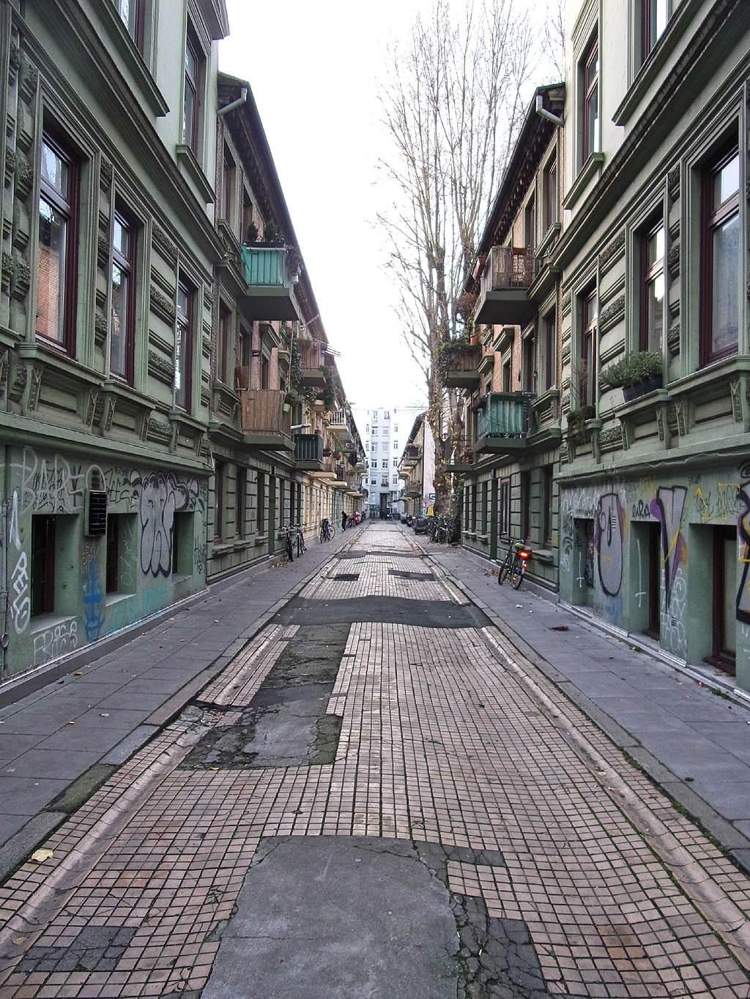

HAMBURG FÜR DIE INSTAGRAMMERS
SCHÖNE STRAßEN
Hamburg ist schon eine echte Perle! Der Hafen, die Alster, der Elbstrand – und natürlich die wunderschönen Straßen machen die Hansestadt zu dem, was sie ist. An einem sonnigen Tag durch die von alten Wohnhäusern gesäumten Straßen bummeln, gehört zu den tollsten Dingen dieser Stadt.
- Paul-Roosen-Straße
- Bellealliancestraße
- Harvestehuder Weg
- Ottensener Hauptstraße
- Deichstraße
- Peterstraße
- Lehmweg
- Beckstraße
- Isestraße
- Övelgönne
- Glashüttenstraße 


SCHÖNE ARCHITEKTUR
In Hamburg gibt es einiges zu sehen – aber nicht etwa nur die typischen Sehenswürdigkeiten. Auch für Architektur-Fans hat die Hansestadt einiges zu bieten
- Chilehaus: Ein Bug aus Backstein
- Krameramtsstuben: Älteste Reihenhäuser der Stadt
- Marco-Polo-Tower: Luxuriöse Wohn-Skulptur
- Dockland: Traumblick auf Hafen und Elbe
- Tanzende Türme: Beschwingt ins Nachtleben
- Vattenfall-Gebäude: Kontraste unter Denkmalschutz
- Künstlerhaus Sootbörn: Nüchterner Bauhausstil


SCHÖNE AUSSICHT
Hamburg ist so flach wie seine Witze. Doch hier und da findet ihr einen Weg nach oben. Wo es die schönsten Panoramen, Aussichtspunkte und den mega Ausblick schlechthin gibt, erfahrt ihr hier.
- Der Klassiker: Der Michel
- Die andere Kirche mit Turm: St. Petri
- Die Pilgerstätte: Der Altonaer Balkon
- Der Newcomer: Die Elbphilharmonie
- Hip trifft auf touristisch: Skyline Bar 20up
- Überholt, aber schön: Tower Bar im Hotel Hafen Hamburg
- Das Dockland: Gratis Hafen-Panorama
- Energiebunker in Wilhelmsburg